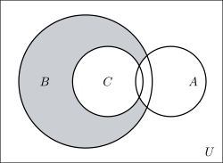

1.4 Practice Problems
Questions from Tutorial Sheet 1. Work each one before opening the solution.
Problem 1.1. Let \(E\) be the universal set, \(E=\{x: x\leq 13,\ x\in \mathbb {W}\}\), and let \[A=\{1,2,3,4,5\},\quad B=\{4,5,6,7\},\quad C=\{5,6,7,8,9\},\] \[D=\{x: 1<x<10,\ x=2k+1,\ k\in \mathbb {N}\},\quad G=\{x: 1\leq x<13,\ x=2k,\ k\in \mathbb {N}\},\quad F=\{1,5,9\}.\]
- (i).
- List the sets \(E\), \(D\) and \(G\). Hence find
- (ii).
- \(A\cap \left (C\cup G^c\right )\)
- (iii).
- \(A-B\)
- (iv).
- \((A\cap B)-C\)
- (v).
- \(F-(A\cap D)^c\)
Show solution
Solution. (i). \(\mathbb {W}\) is the set of whole numbers \(\{0,1,2,\ldots \}\), so \(E\) collects the whole numbers up to and including \(13\): \[E=\{0,1,2,3,4,5,6,7,8,9,10,11,12,13\}.\]
For \(D\), run through \(k=1,2,3,\ldots \) and keep the values of \(2k+1\) that fall strictly between \(1\) and \(10\): \[k=1\to 3,\quad k=2\to 5,\quad k=3\to 7,\quad k=4\to 9,\quad k=5\to 11\ (\text {too big}).\] \[D=\{3,5,7,9\}.\]
For \(G\), keep the values of \(2k\) with \(1\leq 2k<13\): \[k=1\to 2,\quad k=2\to 4,\quad \ldots ,\quad k=6\to 12,\quad k=7\to 14\ (\text {too big}).\] \[G=\{2,4,6,8,10,12\}.\]
(ii). Work outwards from the innermost bracket. First the complement, taken inside \(E\): \[G^c=E-G=\{0,1,3,5,7,9,11,13\}.\] Then the union: \[C\cup G^c=\{5,6,7,8,9\}\cup \{0,1,3,5,7,9,11,13\}=\{0,1,3,5,6,7,8,9,11,13\}.\] Finally intersect with \(A=\{1,2,3,4,5\}\), keeping only what appears in both: \[A\cap \left (C\cup G^c\right )=\{1,3,5\}.\]
(iii). \(A-B\) means the elements of \(A\) that are not in \(B\). From \(A=\{1,2,3,4,5\}\) remove \(4\) and \(5\): \[A-B=\{1,2,3\}.\]
(iv). First \(A\cap B=\{4,5\}\). Now remove anything also in \(C=\{5,6,7,8,9\}\), which removes the \(5\): \[(A\cap B)-C=\{4\}.\]
(v). First \(A\cap D=\{1,2,3,4,5\}\cap \{3,5,7,9\}=\{3,5\}\), so \[(A\cap D)^c=E-\{3,5\}=\{0,1,2,4,6,7,8,9,10,11,12,13\}.\] Now take from \(F=\{1,5,9\}\) the elements not in that set. Both \(1\) and \(9\) are in it, and \(5\) is not: \[F-(A\cap D)^c=\{5\}.\]
Note 1.29. Part (v) is quicker with a small piece of algebra. Removing everything outside a set is the same as keeping everything inside it: \[F-X^c=F\cap X,\] so \(F-(A\cap D)^c=F\cap \{3,5\}=\{5\}\) in one line. Spotting this saves listing a twelve-element complement.
Problem 1.2. Let \(E=\{x: x\in \mathbb {Z},\ 0\leq x\leq 21\}\) be the universal set, \[A=\{x: x=2k-2,\ x<20,\ k\in \mathbb {N}\},\quad B=\{1,3,8,19,20\},\quad C=\{1,2,6,8,9,11,15\}.\] Draw a Venn diagram, and find
- (i).
- \(A^c\cap B^c\)
- (ii).
- \((A\cup B)\cap C\)
- (iii).
- \(A-(B\cup C)\)
- (iv).
- \((A\cup B)^c\)
Show solution
Solution. Listing \(A\). With \(k=1,2,3,\ldots \) the values \(2k-2\) are \(0,2,4,6,\ldots \), stopping before \(20\): \[A=\{0,2,4,6,8,10,12,14,16,18\},\] the even numbers from \(0\) to \(18\). The universal set is \(E=\{0,1,2,\ldots ,21\}\).
The Venn diagram. Placing each of the \(22\) elements in exactly one region:
| Region | Elements |
| \(A\) only | \(0,\ 4,\ 10,\ 12,\ 14,\ 16,\ 18\) |
| \(B\) only | \(3,\ 19,\ 20\) |
| \(C\) only | \(9,\ 11,\ 15\) |
| \(A\cap B\) only | — |
| \(A\cap C\) only | \(2,\ 6\) |
| \(B\cap C\) only | \(1\) |
| \(A\cap B\cap C\) | \(8\) |
| Outside all three | \(5,\ 7,\ 13,\ 17,\ 21\) |
The eight counts are \(7+3+3+0+2+1+1+5=22\), which is the size of \(E\) — the check that nothing has been placed twice or left out.
(i). \(A^c\) is everything in \(E\) outside \(A\), and \(B^c\) everything outside \(B\). Their intersection is what lies outside both: \[A\cup B=\{0,1,2,3,4,6,8,10,12,14,16,18,19,20\},\] \[A^c\cap B^c=E-(A\cup B)=\{5,7,9,11,13,15,17,21\}.\]
(ii). \((A\cup B)\cap C\) keeps the elements of \(C\) that appear in \(A\) or in \(B\). Testing each element of \(C=\{1,2,6,8,9,11,15\}\) in turn: \(1\in B\), \(2\in A\), \(6\in A\), \(8\in A\), while \(9\), \(11\) and \(15\) are in neither. \[(A\cup B)\cap C=\{1,2,6,8\}.\]
(iii). \(B\cup C=\{1,2,3,6,8,9,11,15,19,20\}\). Removing these from \(A\): \[A-(B\cup C)=\{0,4,10,12,14,16,18\}.\]
(iv). \((A\cup B)^c=E-(A\cup B)=\{5,7,9,11,13,15,17,21\}.\)
Note 1.30. Parts (i) and (iv) give the same answer, and that is not a coincidence. It is De Morgan’s law, \[A^c\cap B^c=(A\cup B)^c,\] appearing in a concrete case. Whenever two parts of a question produce the same set, look for the law that made it happen.
Problem 1.3. Find the power set of each of the following.
- (i).
- \(A=\{\ \}\)
- (ii).
- \(B=\{1,2\}\)
- (iii).
- \(V=\{x: x \text { is a vowel of the English alphabet}\}\)
Show solution
Solution. The power set \(P(S)\) is the set of all subsets of \(S\), and it always contains both \(\emptyset \) and \(S\) itself.
(i). The empty set has exactly one subset — itself. So \[P(A)=\{\emptyset \},\] a set with one element. Note that \(P(A)\) is not empty: it is a box containing an empty box.
(ii). List the subsets by size — none, one element, then two: \[P(B)=\Big \{\ \emptyset ,\ \{1\},\ \{2\},\ \{1,2\}\ \Big \},\] which has \(4\) elements.
(iii). \(V=\{a,e,i,o,u\}\), with \(n(V)=5\), so \[n\left (P(V)\right )=2^5=32.\] Grouped by size, the \(32\) subsets are:
| Size | How many | Subsets |
| 0 | 1 | \(\emptyset \) |
| 1 | 5 | \(\{a\},\{e\},\{i\},\{o\},\{u\}\) |
| 2 | 10 | \(\{a,e\},\{a,i\},\{a,o\},\{a,u\},\{e,i\},\{e,o\},\{e,u\},\{i,o\},\{i,u\},\{o,u\}\) |
| 3 | 10 | \(\{a,e,i\},\{a,e,o\},\{a,e,u\},\{a,i,o\},\{a,i,u\},\{a,o,u\},\) |
| \(\{e,i,o\},\{e,i,u\},\{e,o,u\},\{i,o,u\}\) | ||
| 4 | 5 | \(\{e,i,o,u\},\{a,i,o,u\},\{a,e,o,u\},\{a,e,i,u\},\{a,e,i,o\}\) |
| 5 | 1 | \(\{a,e,i,o,u\}\) |
| Total | \(1+5+10+10+5+1=32\) \(\relax \amscheckmark \) | |
Note 1.31. A set with \(n\) elements has \(2^n\) subsets, because each element is independently either in a given subset or out of it — two choices, \(n\) times over. Checking the count against \(2^n\) before writing the list out is the only reliable way to know none have been missed.
- (a).
- If \(A\subset B\), simplify (i) \((A\cap B)^c\), (ii) \(A\cup B^c\), (iii) \(\left (B\cap A^c\right )\cup A\).
- (b).
- If \(A\) and \(B\) are disjoint subsets of the universal set \(E\), simplify (i) \(A\cap B\), (ii) \(A\cap B^c\), (iii) \(A^c\cup B^c\).
Show solution
Solution. (a) \(A\subset B\) means every element of \(A\) is also in \(B\): the circle for \(A\) sits entirely inside the circle for \(B\).
(i). Since all of \(A\) lies in \(B\), the overlap is the whole of \(A\): \[A\cap B=A\quad \implies \quad (A\cap B)^c=A^c.\]
(ii). \(A\cup B^c\) is everything that is in \(A\) or outside \(B\). What is missing is exactly what is in \(B\) but not in \(A\), so \[A\cup B^c=(B-A)^c.\] Checking with De Morgan: \((B-A)^c=\left (B\cap A^c\right )^c=B^c\cup A\), which is the same set.
(iii). \(B\cap A^c\) is the part of \(B\) outside \(A\), namely \(B-A\). Adding \(A\) back restores the whole of \(B\): \[\left (B\cap A^c\right )\cup A=(B-A)\cup A=B.\]
(b) Disjoint means the two circles do not touch: \(A\cap B=\emptyset \).
(i). That is the definition itself: \[A\cap B=\emptyset .\]
(ii). \(A\cap B^c\) is the part of \(A\) lying outside \(B\). Since none of \(A\) is inside \(B\), that is all of it: \[A\cap B^c=A.\]
(iii). By De Morgan and part (i): \[A^c\cup B^c=(A\cap B)^c=\emptyset ^c=E.\]
Problem 1.5. Express each of the following in its simplest form.
- (i).
- \((A\cup B)\cap \left (A\cup B^c\right )\)
- (ii).
- \(\left [(X\cap Y)^c\cup (X-Y)\right ]^c\)
- (iii).
- \(B^c\cap (A\cup B)\)
- (iv).
- \(\left [A^c\cup \left (A\cap B^c\right )\right ]^c\)
Show solution
Solution. (i). The distributive law lets \(A\) be taken outside: \[(A\cup B)\cap \left (A\cup B^c\right )=A\cup \left (B\cap B^c\right )=A\cup \emptyset =A.\]
(ii). Apply De Morgan to the outer complement first: \[\left [(X\cap Y)^c\cup (X-Y)\right ]^c=(X\cap Y)\cap (X-Y)^c.\] Now \(X-Y=X\cap Y^c\), so by De Morgan again \((X-Y)^c=X^c\cup Y\). Hence \[=(X\cap Y)\cap \left (X^c\cup Y\right ) =\left [(X\cap Y)\cap X^c\right ]\cup \left [(X\cap Y)\cap Y\right ].\] The first bracket is empty, because nothing can be in \(X\) and in \(X^c\) at once. The second is \(X\cap Y\), because \(X\cap Y\) is already inside \(Y\). So \[=\emptyset \cup (X\cap Y)=X\cap Y.\]
(iii). Distribute \(B^c\) across the union: \[B^c\cap (A\cup B)=\left (B^c\cap A\right )\cup \left (B^c\cap B\right ) =\left (A\cap B^c\right )\cup \emptyset =A-B.\]
(iv). De Morgan on the outer complement: \[\left [A^c\cup \left (A\cap B^c\right )\right ]^c=A\cap \left (A\cap B^c\right )^c =A\cap \left (A^c\cup B\right ).\] Distributing: \[=\left (A\cap A^c\right )\cup (A\cap B)=\emptyset \cup (A\cap B)=A\cap B.\]
Note 1.32. The pattern in (ii) and (iv) is the same: when a complement sits outside a large bracket, use De Morgan to push it inwards first, and only then distribute. Trying to simplify inside the bracket before dealing with the outer complement leads to much longer expressions.
Problem 1.6. In each of the Venn diagrams below, shade the region representing (i) \(B\cap (A-C)^c\), (ii) \(B\cap (A\cup C)^c\).
Show solution
Solution. (i). Reading the expression: take \(B\), and remove from it everything that lies in \(A\) but not in \(C\). The set \(A-C\) is the part of \(A\) outside \(C\); intersecting \(B\) with its complement keeps the rest of \(B\).
Of the four regions making up \(B\), only one — the part in \(A\) but not in \(C\) — is in \(A-C\). So the shading is all of \(B\) except that piece: \(B\) alone, \(B\cap C\) alone, and the centre \(A\cap B\cap C\).

(ii). Here \(C\) lies wholly inside \(B\), and \(A\) overlaps both. The expression takes \(B\) and removes everything belonging to \(A\) or to \(C\), so what is left is the part of \(B\) lying outside both circles.
Note 1.33. In both parts the complement is the piece to read carefully. \((A-C)^c\) and \((A\cup C)^c\) are each enormous regions stretching outside all the circles, but intersecting with \(B\) confines the answer to inside \(B\). Shade \(B\) first and then rub out, rather than trying to shade the complement itself.
Problem 1.7. People consume tobacco by three methods: smoking (SM), sniffing (SN) or chewing (CH). A survey of \(70\) tobacco consumers found that \(56\) smoked, \(56\) sniffed and \(50\) chewed; \(48\) both smoked and sniffed, \(42\) both smoked and chewed, and \(44\) both sniffed and chewed. Determine the number who used all three methods.
Show solution
Solution. Step 1 — write down what is known. Every one of the \(70\) uses at least one method, so \[n(\text {SM}\cup \text {SN}\cup \text {CH})=70,\] \[n(\text {SM})=56,\quad n(\text {SN})=56,\quad n(\text {CH})=50,\] \[n(\text {SM}\cap \text {SN})=48,\quad n(\text {SM}\cap \text {CH})=42,\quad n(\text {SN}\cap \text {CH})=44.\]
Step 2 — use the inclusion–exclusion rule for three sets. Writing \(x\) for the number using all three, \[n(\text {SM}\cup \text {SN}\cup \text {CH})=n(\text {SM})+n(\text {SN})+n(\text {CH}) -n(\text {SM}\cap \text {SN})-n(\text {SM}\cap \text {CH})-n(\text {SN}\cap \text {CH})+x.\]
Step 3 — substitute and solve. \[70=56+56+50-48-42-44+x\] \[70=162-134+x=28+x\] \[\implies \quad x=42.\]
\[\therefore \quad 42 \text { people used all three methods}.\]
Step 4 — check by filling in every region. Working from the centre outwards:
| Region | Calculation | Number |
| All three | given by Step 3 | 42 |
| SM and SN only | \(48-42\) | 6 |
| SM and CH only | \(42-42\) | 0 |
| SN and CH only | \(44-42\) | 2 |
| SM only | \(56-6-0-42\) | 8 |
| SN only | \(56-6-2-42\) | 6 |
| CH only | \(50-0-2-42\) | 6 |
| Total | \(42+6+0+2+8+6+6\) | 70 \(\relax \amscheckmark \) |
Note 1.34. Every region comes out zero or positive and the total is exactly \(70\), so the answer is consistent. Had any region come out negative, the data itself would have been contradictory — and that check is worth doing, because it costs a minute and catches both arithmetic slips and impossible questions.
Problem 1.8. In a class of \(100\) students, \(60\) like Mathematics, \(40\) like Economics and \(45\) like Demography. In addition, \(20\) like both Mathematics and Economics, \(25\) like both Economics and Demography, \(30\) like both Mathematics and Demography, and \(15\) like all three.
- (a).
- Draw a Venn diagram to represent this information.
- (b).
- Find the number of students who like exactly one course.
- (c).
- Find the number who like neither Economics nor Demography.
Show solution
Solution. Write \(M\), \(E\) and \(D\) for the three sets.
(a). Always start at the centre and work outwards, subtracting what has already been placed.
| Region | Calculation | Number |
| \(M\cap E\cap D\) | given | 15 |
| \(M\cap E\) only | \(20-15\) | 5 |
| \(E\cap D\) only | \(25-15\) | 10 |
| \(M\cap D\) only | \(30-15\) | 15 |
| \(M\) only | \(60-5-15-15\) | 25 |
| \(E\) only | \(40-5-10-15\) | 10 |
| \(D\) only | \(45-10-15-15\) | 5 |
| Outside all three | \(100-85\) | 15 |
| Total | 100 \(\relax \amscheckmark \) | |
(b). “Exactly one” means the three outer regions only: \[25+10+5=40.\]
\[\therefore \quad 40 \text { students like exactly one course}.\]
(c). “Neither Economics nor Demography” is \((E\cup D)^c\). First \[n(E\cup D)=n(E)+n(D)-n(E\cap D)=40+45-25=60,\] so \[n\left ((E\cup D)^c\right )=100-60=40.\]
\[\therefore \quad 40 \text { students like neither Economics nor Demography}.\]
Note 1.35. The answer to (c) can be read straight off the diagram as a check: the students outside both \(E\) and \(D\) are the \(25\) who like Mathematics only together with the \(15\) who like none, giving \(25+15=40\). Two independent routes to the same number is worth more than one route done carefully.
Note 1.36. Parts (b) and (c) happen to give the same number, \(40\). They are different sets of students — (b) counts \(25+10+5\) and (c) counts \(25+15\) — and the coincidence means nothing. Do not let a repeated answer persuade you that two questions were the same question.
Problem 1.9. A survey of \(80\) snack consumers found that \(62\) eat chips (CH), \(55\) drink soda (SO) and \(48\) eat candy (CA). In addition, \(40\) eat chips and drink soda, \(35\) eat chips and candy, and \(42\) drink soda and eat candy. Find
- (a).
- the number of customers who take all three;
- (b).
- the number taking exactly two snacks.
Show solution
Solution. (a). With \(x\) the number taking all three, inclusion–exclusion gives \[80=62+55+48-40-35-42+x\] \[80=165-117+x=48+x\] \[\implies \quad x=32.\]
\[\therefore \quad 32 \text { customers take all three}.\]
(b). “Exactly two” excludes those taking all three, so each pairwise overlap must have the \(32\) removed from it: \[\text {chips and soda only}=40-32=8,\] \[\text {chips and candy only}=35-32=3,\] \[\text {soda and candy only}=42-32=10,\] \[\text {total}=8+3+10=21.\]
\[\therefore \quad 21 \text { customers take exactly two snacks}.\]
Check. The single-snack regions are \[62-40-35+32=19,\qquad 55-40-42+32=5,\qquad 48-35-42+32=3,\] and the eight regions total \[19+5+3+8+3+10+32=80.\ \checkmark \]
Note 1.37. The commonest error in (b) is to answer \(40+35+42=117\), or to answer \(117-32=85\). Both are far larger than the \(80\) people surveyed, which is why the running total is worth glancing at. Each pairwise figure such as “\(40\) eat chips and drink soda” includes the \(32\) who take all three, and it must be subtracted from each of the three overlaps separately.
Questions on this section
Stuck on something here? Ask below and it stays attached to this topic.